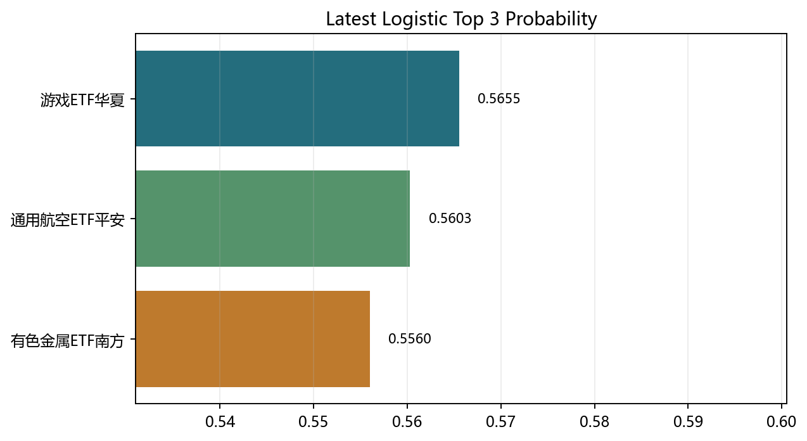
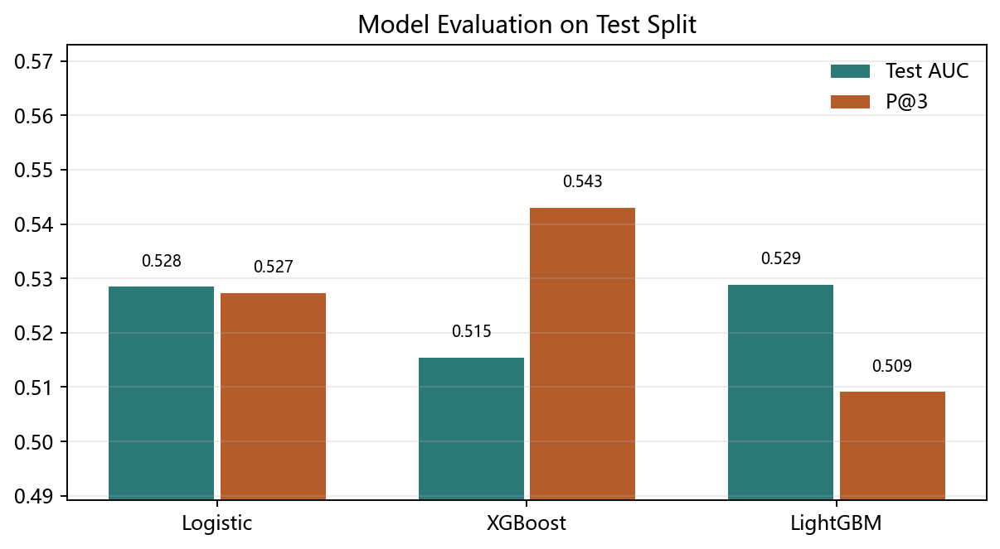
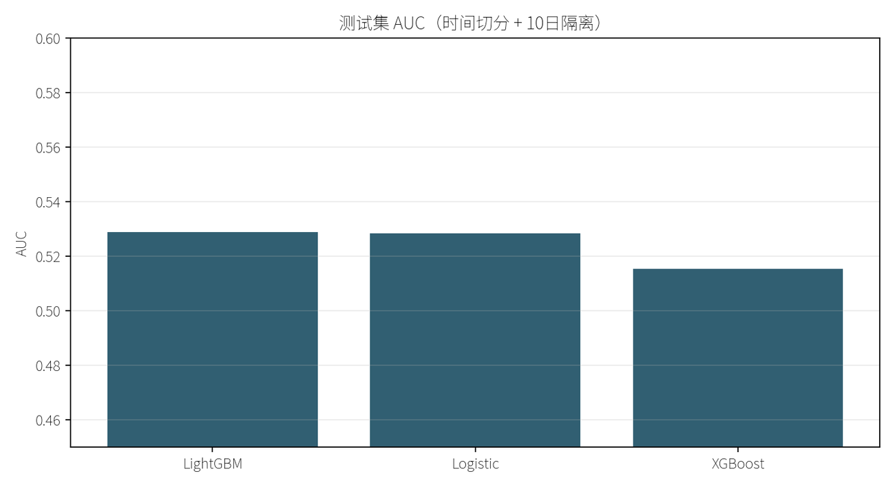
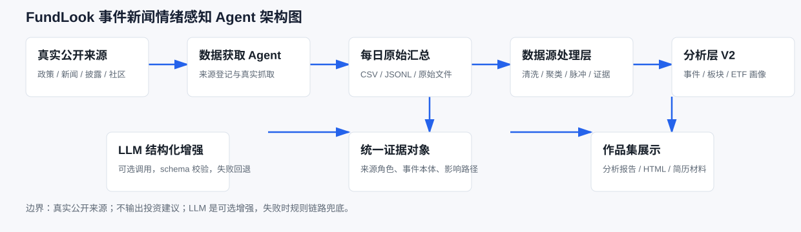

先生成候选排序
基于 ETF 日线面板和固定因子，输出未来 10 个交易日的候选 ETF、概率与策略目标。
ETF 横截面轮动 · 事件新闻情绪 Agent · 模拟决策工作台
页面按真实使用顺序展示：先由 ETF 量化工作台生成候选排序和模拟调仓，再由事件新闻情绪 Agent 读取公开信息，补充板块情绪、ETF 信息画像和风险复核线索。
这里不是把两个项目简单并排，而是把量化候选、事件解释和风险复核放到同一条工作流里。
基于 ETF 日线面板和固定因子，输出未来 10 个交易日的候选 ETF、概率与策略目标。
从指定观察日开始滚动调仓，结合 Top3 概率和模型评估图验证工作台输出。
把新闻、披露、政策和社区评论转成事件对象，连接到板块与 ETF 画像中。

第一层：候选排序
工作台以 ETF 日线面板为基础，结合 46 个固定因子和多模型输出，形成横截面候选排序。界面保留预测日期、训练区间、模型结果、概率和策略目标，方便从候选池进入后续模拟。
第二层：模拟验证
从一个观察日开始，按所选策略每 10 个交易日滚动调仓，观察模拟资金曲线变化。这个部分展示的是量化主系统本身的输出能力，为事件 Agent 的解释层提供明确承接对象。




这一层放在量化结果之后出现：它不替代模型排序，而是解释排序背后的当日信息结构。
Agent 读取财经新闻、专业披露与会议纪要、基金社区评论等公开信息，经过获取、清洗、去重聚类、事件结构化和统一证据对象，生成可追溯的板块情绪与 ETF 信息增强画像。

事件对象按影响通道进入后续聚合，媒体叙事提供高频线索，披露、政策和产业事件用于增强置信与解释。
Agent 不直接把单条新闻贴到 ETF 上，而是先形成板块状态，再根据主题映射关系把信息分、风险分和当日变化原因写入 ETF 画像。这样量化工作台的候选结果就有了可解释的信息侧视图。
positive_catalyst · 活跃事件 231 个
媒体 2.649 / 产业 1.201 / 政策 0
positive_catalyst · 活跃事件 783 个
媒体 2.033 / 产业 0.042 / 政策 0.076
positive_catalyst · 活跃事件 199 个
媒体 0.573 / 产业 0 / 政策 0.07
positive_catalyst · 活跃事件 48 个
媒体 0.389 / 产业 0 / 政策 0
tmt_growth · confirmed_catalyst · covered
broad_market · confirmed_catalyst · empty_today
tmt_growth · confirmed_catalyst · covered
tmt_growth · confirmed_catalyst · covered
量化系统给出候选，事件 Agent 负责把支持因素和负向压力同时放到台面上，便于复盘和人工判断。
healthcare · risk_review · 信息分 -0.346
healthcare · neutral · 信息分 -0.217
broad_market · confirmed_catalyst · 信息分 1.926
financials · confirmed_catalyst · 信息分 0.369
港股科网板块走强，快手涨超7%！可灵AI年化收入突破3亿美元
半导体设备ETF国泰（159516）大涨超2.3%，交投活跃
半导体产业链持续走强 华虹公司涨超10%创历史新高
午评：创指半日涨3.29% 科创50涨超
英科医疗股价连续3天下跌累计跌幅9.31%，国泰基金旗下24只基金合计持1349.88万股，浮亏损失7262.38万元
英科医疗股价连续3天下跌累计跌幅9.31%，光大保德信基金旗下3只基金合计持63.04万股，浮亏损失339.16万元
由历史因子、横截面标签和多模型结果生成候选池。
把当日公开信息压缩成板块情绪、ETF 画像和风险线索。